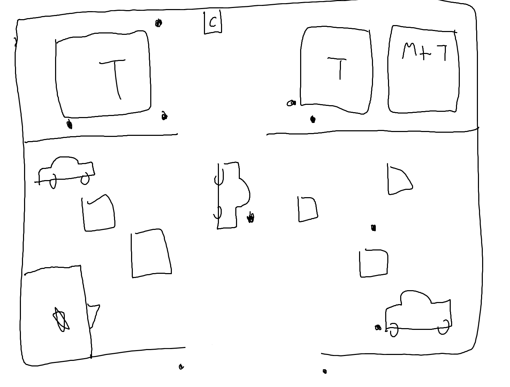
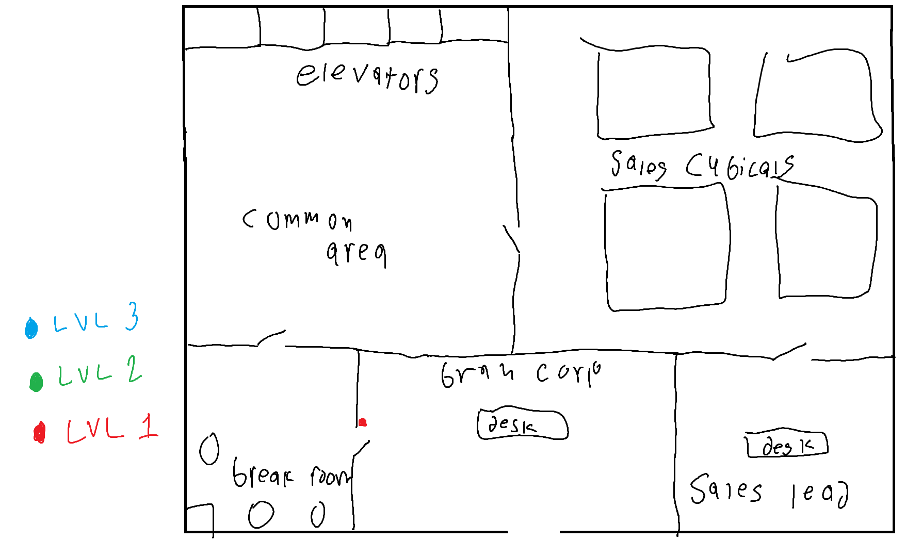
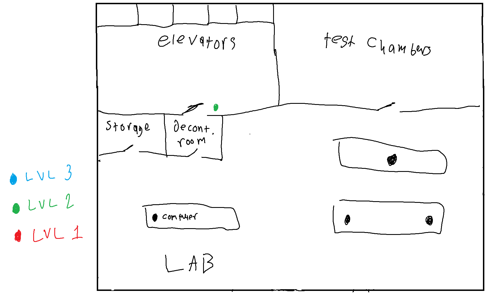
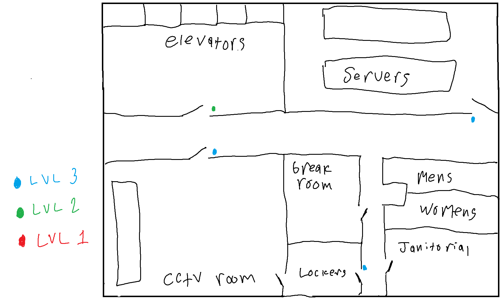
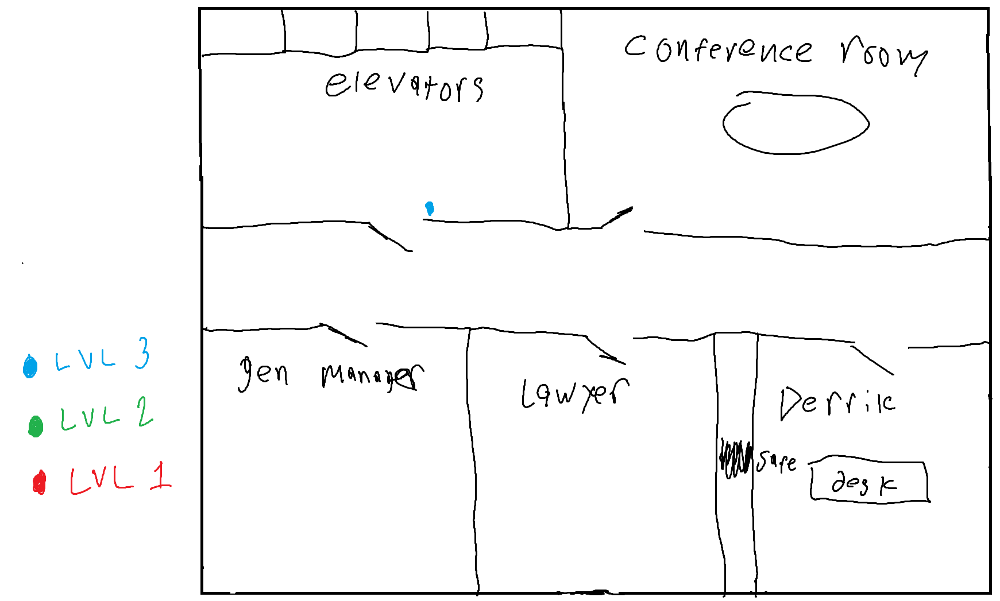
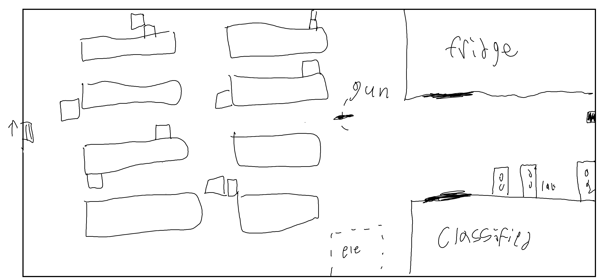

Story
Act 1
You find yourself standing in front of your trusted fixer, Ron Elbert, at the Nut Farm bar’s top floor office. Ron Leads the Night Blood gang and gives you and your friends odd jobs every once in a while. Pay is good, risk is manageable, and Ron isn't the worst person to work with. Ron is a ginger (gross) man, semi cut, with a cybernetic arm and a shotgun on his hip. Usually dresses in business attire, Ron likes to call himself a business man, but we both know what he really is. He is usually straight, to the point, and very serious. Ron, sitting at his desk, tells the players, “Boys do I have the perfect gig for you… Context, the Mafia has set up shop a little too close to home, so I need to show those old timey gonks who owns this place. There is a warehouse on the other side of the corpo center, [LOOK UP ADDRESS]. Ima need you guys to repossess some of the assets in that warehouse and bring it here. I Don’t exactly care how you acquire the goods, just grab all you can and burn the rest. Bring it back here, just around back. Pay is double the usual, 1k each, more depending on how much of the stuff you grab.”Naturally burning drugs is a terrible idea, so we will see what the players do here… >>Players are free here to spend any excess money, or do extra things like GET A CAR. Upon arriving at the warehouse, players will find two men in suits and fedoras outside with no visible cyberware. They are open carrying tommy guns with drum mags, 1920’s style (Chicago Goon). Both speak in a chicago accent, and will gladly light up the players if angered. Wearing no armor, so easily killable. Inside there are about 10 more guards, wearing the same clothing (same goon) and 3 specialist goons (Chicago Specialist). >>Here will need to improvise based on player’s actions, whether stealthy or just walking in.
Inside the warehouse
{kind=link}
players will find pallets of drugs, so many that it would be impossible to fit it all in 1 car. If counted, there are 29 pallets of Tarogen and 1 pallet of misc drugs like hypo and synthcoke. If players know, 1 box of Tarogen is more valuable than the entire pallet of misc drugs. Each pallet has 8 boxes of drugs wrapped up. Each box has 30 doses of each. >>Players CAN leave and come back with a box truck or something, but by the time they get back, majority of the product will be gone (4 Pallets of Tarogen and the misc drug pallet left) and there will be even more guards there now. 5 cops, 10 Chicago Goons, 8 Chicago Specialists, and 1 Chicago MiniBoss. Currently loading the rest of the product into a truck themselves, so bringing one would have been useless unless thought of ahead of time. So players get drugs to Nut Farm. Ron will pay 100 to each player per box, so if 1 pallet = 800 per player. He will pay not very much for the misc drugs. Once players bring the goods, however they can, Ron greets them with 2 bodyguards. These guys look built for close quarters engagements, shotguns, blades, the whole works. Once players give the money up, Ron will get one of his guys to drop the bag of money, classic exchange, done it before. Ron goes, “see you guys for the next one…” and him and his guys walk back into the nut farm with the goods. Players now free to go around and do what they please until the next job (hint that something might happen here so can't end session) >>After a bit, jump them with Chicago Specialists, its time to introduce the boss… Bagged and incapacitated, players are brought to the Night City Bay (they dont know this). They noticed things being wrapped to their feet and their restraints. They are walked to a spot and once they are all in place, the bags on their heads are lifted. Upon the bag being lifted, they are blinded with car lights shining on them, they slowly notice that there are a lot of goons here and they are at the docks, backs facing the water. All players and Ron and 2 bodyguards from Ron’s place are here. One man starts to walk forward, and says, “So, you boys thought you could just steal from me and kill my men right under my nose huh? Well you thought wrong. I think its time you meet the rest of my enemies.” He waves at one of his goons, this one is decked out in cyberware. The mini boss goon goes to rons body guards and pushes them into the water, once he gets to Ron, Ron says, “You won’t get away with this, the night bloods are going to have your head you know…” Man responds with, “eh, ive dealt with worse before.” and the mini boss pushes ron into the water. The mini boss gets to the players and the man says, “Wait. You boys did a bang up job on my place, if all of you equal all of the goons you killed, then maybe you can be useful. Choice is yours…” If a player says no, they are pushed into the water and die, assuming other players agree, they are cut loose and introduced to the man. “The name’s Al, Al Capone. Welcome to the Mafia.” He walks away, saying, “Meet me at this location for your next job, you got 24 hours to get straight.” As he is saying this, the miniboss hands players a piece of paper with an address on it, and then walks away too. As players are leaving the docks, a bright flash of light and boom happens on the same empty street as them, and a minivan comes soaring by, and stopping nearly in front of them. Players hear some mumblings in the car, indistinct, and a man steps out. He looks relatively older, blonde long hair, labcoat and shirtless underneath. In a surfer voice he laughs, “HAHAHA, I can’t believe it worked brah!” He looks at players, “I just like-” BANG The mans head explodes right in front of the players, and players look towards where the shot came from. It was Al Capone right next to his own car. He shouts, “Just saved ya life again boys, better be grateful. Consider that minivan a sign on bonus.” Him and his goons speed away, as the players are left with a dead corpse in front of them, and a slightly bloody purple minivan. Upon closer inspection, it looks heavily modded, and seats 8 people. It is still smoking from the flash and bang it just came from. If players get in, an AI greets them [Play voice clip here]. [END SCENE]
Act 2
Upon the start, inform players of what Mike looked like, and that Kiriko and Danny's foster parent friend Nate are there. Kiriko will ask Nate, "Why are you here? I get that Cass got mixed in with some bad group again but what are you doing here?" Nate will reply with, "I know this guy, so I guess thats why I'm here.", Kiriko will look at Cass and say, "Oh I havn't introduced him to you yet, this is my other boyfriend Nate." Upon analyzing Nate, he is unbelievable buff, and sort of recognizable as a media. >>Kiriko here can converse with the car if players choose not to >>Players here can converse with the car, use the preset soundboard, but dont introduce the borg bot idea until later >>At this point, players can choose to time travel (maybe use a sound that does not promote time travel unless the players know when, where, and why they should) >>Players can wait until meeting time, or continue where they left off last session in their free time. Proceed when players head to meeting spot with Al The address on the paper, funnily enough, points back to the Nut Farm. Upon arriving, players will notice Chicago goons outside the bar, and inside the bar, they don't serve alcohol, or at least publicly. Players will need to head to the back, the same office where Ron was to meet Al. >>If players are thinking of jumping and killing Al here, show how its suicide with multiple Chicago Mini Bosses and specialists. Upon entering the office, Al will say “Ah, looks like you boys chose the right option. I’ve got some great jobs lined up for you. There's this convoy from Brah Corp headed through our area, Ima need you fellas to liberate the contents in said convoy. I’ve got no idea what is inside there, all I knows is I want it.” He hands a shard over to the players with details on when and where the convoy is headed. There is also details of what the convoy consists of, 2 trucks, and 2 humvees, so 6 goons (use random goon generator) but all dressed in suits. (all have SMG 21 (3D6, 2/3/15, 30) or random pistol) One Humvee has a .50 on top. They arrive from the city outskirts and are heading into the corpo center. Players should intercept BEFORE they get to the corpo center. Earlier the better, but the earlier the less rooftops and cover... >>Players can choose where to take the convoy and how. If players mess it up, they always have a time machine, but should not use it to meet themselves. If they do, introduce some villain from a different time or something. CANT ACTUALLY USE TIME MACHINE unless power core… Inside convoys, One has weapons, one has drugs. One pallet of Tarogen, and other unknown drug [CHECK GEAR] inside inside, there is also a round device inside that is in a very protective box (power core). The weapon truck has 1 crate of H&K G38’s (10), no ammo, but one big metal box in the back. Upon opening, players see a very large gun with a huge mag on the side. The gun is very heavy and anyone attempting to shoot it will most likely dislocate their shoulder. Upon inspection, this gun fires a custom 20mm round (7D10 AP), and the mag only has 10 rounds in it. It looks like a massive sniper rifle. Lastly there is another prototype weapon. Its a solid rifle, with a display on the top facing the shooter. There is no obvious magazine to it, but looks cool. [LASR] >>Naturally, all of the contents of these trucks should be brought to Al, hiding some of it might result in punishments… As players leave, if they don't discover a tracking device on the vehicles, they will be pursued by goons on bikes (4). >>Snarky AI comment, “well that was surprisingly convenient.” Players bring back goods to the nut farm, in or out trucks. If they bring the convoys trucks to the nut farm, then Al will be upset, “you really thought bringing a tracked vehicle to my place of business was a good idea?” Then will burn down nut farm. Either way, new location for doing business. Al will pay them each 1k for the job, no extra, will not budge. Players free from here to kill time before next job. [END SCENE]
Act 3
>>diffuculty curve here, no holding back by shooting once or just skipping attack turns all together... Aether should be introduced BEFORE players meet Al for the job. Cullen went to the bar to find a new girl maybe? Or play Casino line for van and make players gamble, meet there. WE CANT FORCE THIS ENCOUNTER, "roll" for ATTR, make her appear naturally. Bring up something like, "cullen, theres a lot of fish in this sea if you want to try your luck"
>>Its been a few days since the last mission, Al has been keeping an eye on the players so they don't leave while they still owe him. Everyone needs to roll 1D10, on a 1 or 2, they need to pay ALL of their monthlies.
No, they cannot have skill improvements here, players have been laying low, so staying at others/their housing/street Players get informed, whether by call, or by mafia goons showing up and telling them that Al requests a meet. Players will recieve a new address to go to, as the Nut Farm is comprimised. New address leads to a high rise building in the corpo center. The outside of the building has no obvious markings as to whose building it is, but upon entering it is very obviously Al's as there are a ton of goons walking around in 1920's suits and tommy guns. The receptionist is a middle aged women who somehow also sounds like she is from Chicago. She informs players that Al is waiting for them on the 70th floor. Inside Al's huge office, he tells players, "Welcome to the HQ, I trust you goons wont spill the deets on where this place is yeah?" "anyway, I got a job for you. Somebody got something I want, unfortunatly he is usually well protected. Any time he leaves his work place, he disappears from my guys. He's got a lot of information I need, usually on that laptop he carries around." He hands players another shard, it gives players the address of the office that this person works at, and his details. His name is Derrik Eon, a medtechie that works for Brah Corp. His computer contains the whereabouts of Brah Corp's stored products, which is a closely guarded secret. He is in a smaller office building near the Corpo Center, but still vast in size. The building is Brah Corp's Drug office, which used to be the Accelerated Research Lab owned by Elon Musk. Derrik's office is on the 40th floor of the building, and players need to find a way to grab his laptop while he is inside the building. Every night, he leaves the building and is never to be seen again until the next morning. >>Players can choose to try and track Darthon to where he lives, or take the laptop while he is inside. Both are possible, just one might be easier to grab than the other if players want to be hyper aggro >>players also have option of time travel, say someone dies trying to get it, they can always go back in time to change their fate... >>Kiriko/Aether should be there to help in killing a lot of people, worse comes to worse we can drag Nate in somehow [Insert deets of building and map of important floors here] Floor 1:  Floor 3: Lab  Floor 26: Security  Floor 40:  Darthon has a personal safe inside his office, which contains valuable objects to him. Inside: - A picture of him with 4 arms and other people (Gary, Johnny Afterburner, Elon Musk, Dr. Chang, Lucas Barellio, and DeathStroke) - A blue ring (contains his powers) - A vial of unknown substances (death drug and super power drug) one is labeled "for them" and the other "for me" - An address with a note on it, "If you ever need help, I'll be where our dreams became reality. -G" - A weird capsule shaped object, too big to be a pill, and cold to the touch On his computer, the following information can be found: - Locations of the 3 warehouses that Brah Corp stores their goods, Drug warehouse is the first, Weapon Warehouse is the second, and General Warehouse is the third - Emails from a man named Mike Felsing, detailing information about recent theft of goods from convoys. - Another email from Mike, along the lines of "Subjects are on track, working in the right place. Analyze what their next moves are. Some are already ripe for the picking, so advance on Plan Q." - other random information, like chemical compounds for drugs labeled as Project X, Project D, and Project R. (x is super power, D is death, and R is reflex like Tarogen and Elfine) Upon Retreving laptop, players should deliver to Al Capone in his high rise. He will take it, wire players e$750, and say something along the lines of "Your debt is almost payed off, just one last heist and you will be a free agent of mine. There may be even more profit involved in this next job. Meet me back here in a few hours while I get the deets set up." [END SCENE]
{kind=link}
{kind=link}
{kind=link}
{kind=link}
Act 4: The Day of Reckoning
>>big choices here. At some point, Brah Corp will try to sway players to their side of the coin, and kill Al. Still don't know if I want Aether to be the one or not. Prob gonna be someone like Franz >>PREFACE: tell players that Im probably not going to hold back too much in combat now, they should know the jist, but stuff like bosses wont be min maxxed. With Goons however, they will be gunning to kill. Basically im going to take multiple actions, im going to use full auto and 3 round burst. players have the means to wipe the floor with the goons. Players should be called to Al's building where the plan is now finalized. Al should say something like: "you boys ready to pay off your debt?" Then Kiriko gets thrown in the room like jake last session, "and your debt too? She thought she could get away from this... Say, where is that friend of yours X-pert?" Kiriko should retort with something like: "good luck finding him. even if you did, i feel bad for the people who do..." Al: "what ever little lady, you goons are going to be the front line of this assualt. Most of my other men will be hitting the other warehouses, but i want you goofs to hit the drug warehouse. ill send some guys with you, but i intend you to get all the goods my box trucks can carry. You do this and your debt is paid off..." "again, the main item i need is that blue drug called tarogen. I don't care about the rest, your resident druggie can OD on the rest for all i care... You should already know the place, fattie over here gave me the info anyway." Kirko is distant to cullen, noticing he spent no time to get a new gf... Aether is with players here, and she will ask Al a few questions: "so, this drug is supposed to be the big money maker huh..? Ever think you could make more if you did more than the crappy street drugs?" AL: "honey, i think i know how to run a business more than you. I doubt you have any expierence in corporations and the like." AETHER: "dont judge a book by its cover..." Once players get out of building, there are a lot of cars on the side of the road here, and a bunch of henchmen. There is a large quantity of box trucks and some goons walk up to players and tell them that they will follow them to the target location. Al walks out, and says: "alright boys, big score today, lets get it done." He then gets in one of the box trucks and they roll out to the weapons warehouse (players dont know). Players + Kiriko + Aether should head to the drug warehouse at this point, goons wont let them dilly dally. >>Pull over players here, 2 cops asking where players are headed to tonight. Easy to convince. if they end up inspecting inside the minivan, players are screwed. Once arrived at the "warehouse" the location is actually a coffee shop in the northside district. Inside the coffee shop are regular people and regular looking workers. There is nothing around back and the sides are flanked by other shops that also have legit businesses in them. Upon grilling the workers further, they reveal that the warehouse is underneath the coffee shop and point them to the secret enterance. inside of the warehouse is huge, tons of boxes all color coded. There is a fridge section, and the computer would reveal all info on what is where. There is a blast proof door labeled "CLASSIFIED" where the super power drugs are. You need a level 3 keycard (blue) to get in. or mike can hack it. Inside is also a load of goons, were talking like 15 minimum, 5 of which have ARs. total of 4 goon allies, just regular Chicago Goon. I also want a gun emplacement inside, just your normal M2HB, should direct fire at Aether. >>before players go in, Aether will request that she can get prepped before this fight. Here she will grab some armor and inform Darthon that players are at the drug warehouse. She should come back with some nifty looking armor, practically a mech suit. >>so ideally if players die, there is a litteral time machine to let them go back in time to fix it. even so, use the new player rule. should help advance the plot suprisingly. Map of Warehouse: >>so this is an incentive to time travel, Kiriko will say something like, "they were expecting us to come here..." "WAIT, can't we just go back in time before yesterday and rob this place blind?" Once the warehouse is liberated, ideally all goons are dead and aether shot up like crazy. cant die tho so play it a bit safe with the .50. players should have free reign for a bit, theres an elevator to the street outside to load the cargo. Once the first few batches are loaded, introduce the ultimatium... Inside Fridge room: Inside classified room: Players will notice a man in knight armor walking towards them, with a sword drawn. Aether will ask players to hear him out. He walks up to players and says: "Gentlemen, I have a proposition for you. Why work for this old time gangster when you could be working for the very corporation you are stealing from?" So here, Darthon is on overwatch from a distance to observe players. Don't shoot them, and Aether should still be in deep cover with the players rn. So players CAN kill Sickingen here and stay loyal to Al, OR they can agree to his terms: - kill Al - work for future brah corp expidentures, need to work off all the problems they caused, but will pay players handsomly Killing Sickingen here should not be a hard task, but regardless of choice a new enemy approaches... Further down the street, some ancient roman soldiers (4) approach players shouting in Latin with their swords raised. Players can hear them say "GLORIA CAESARI" and "UT CAPITA EORUM" (take their heads) Players should dispatch these romans easily, and one of the side characters will say something like "wow, looks like caesar is in town." and "This is not a good sign. Rome invading NUSA is probably a sign that we will all die..." Rome has nukes, duh. Romans killing anyone on the street, probably a declaration of war. [END SCENE]
{kind=link}